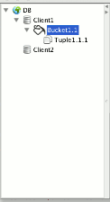

Fig 1. Overall view. |
Fig 2. Menu. |
|
This area is composed of a tree constituted of nodes which correspond to connections, buckets and tuples. To access the actions that can be executed for an node select a node and now there are two ways to see the actions available by:
Once the popupmenu is shown select the appropriate active option to execute the corresponding operation (action). The popup have some actions specific for the type of node, so they are common to all the NOSQL databases and others specific to the current database(s) connected to, which appear at the bottom of the popupmenu. The main node type are: |
 |
Fig 3. Tree view. |
Fig 4. Details view. |
Fig 5. Log view. |